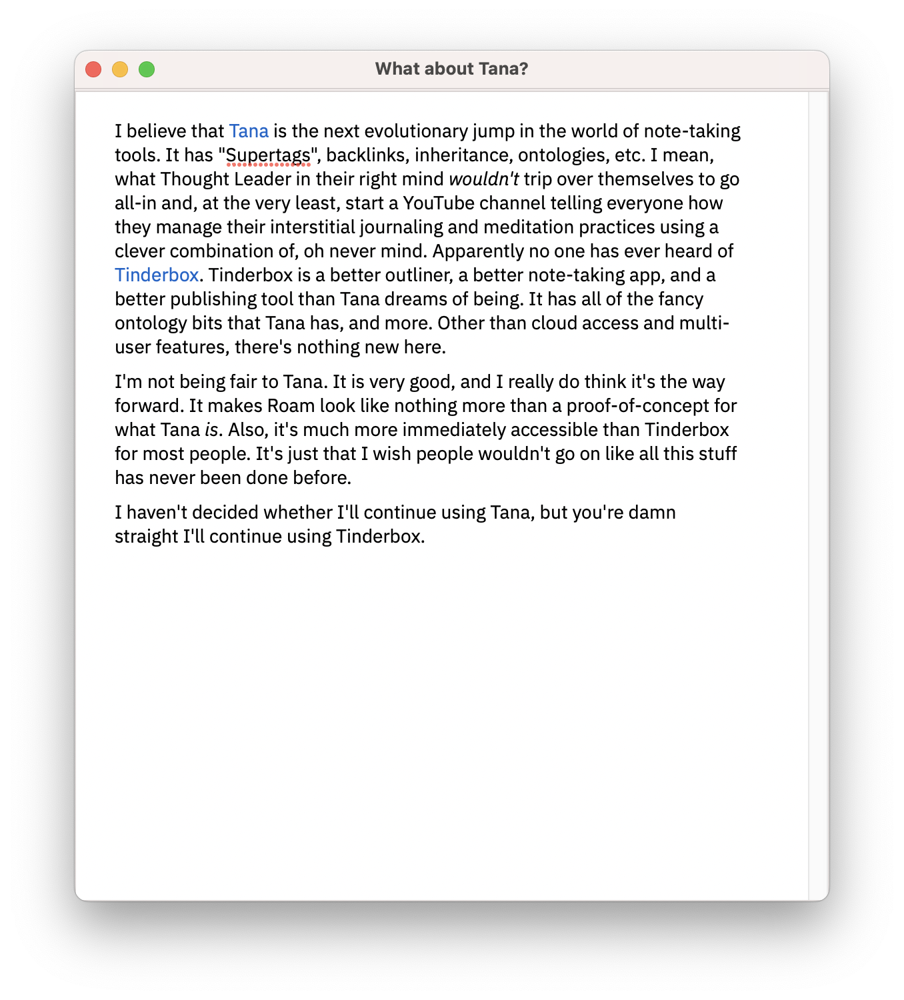
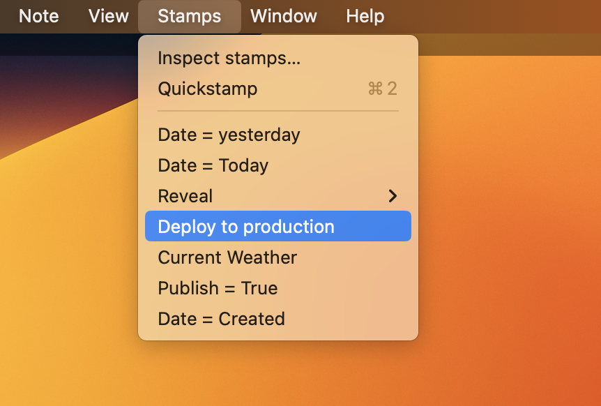

Writing a blog using Tinderbox

I've always like working in Tinderbox, because it can be anything. The above screenshot is from the Tinderbox document that generates this blog. For managing posts and links and templates, the above layout gives me quick access to everything. When I'm ready to write, it can look like this:
 
Putting this all together has taken some work, but I've gotten to a point where I can just hit Return, type my post, and choose "Deploy to production" from the Stamps menu. I like it.
 
On the other hand, it can be a little fragile when I want to tweak something. And with Tinderbox, I always want to tweak something! So I spend a lot of time waffling between using things like Ghost and WordPress that make publishing a blog quite simple and using Tinderbox or Hugo and having complete control around publishing a static website. I guess this is why I still have both.